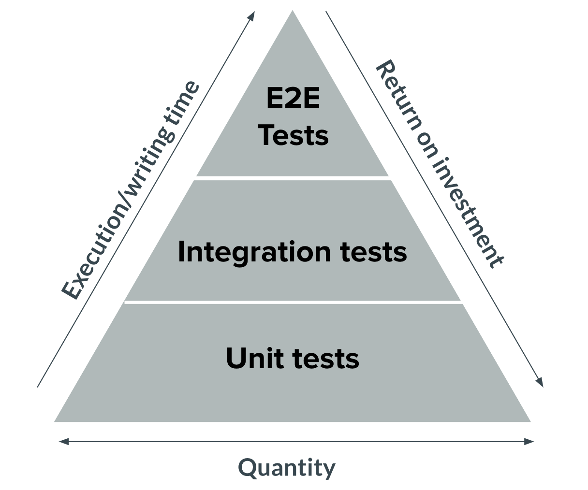

Teaching Modern Web Development with Python


Tips for navigating the slides:
- Press O or Escape for overview mode.
- Visit this link for a nice printable version
- Press the copy icon on the upper right of code blocks to copy the code
About me

Python Cloud Advocate at Microsoft
Volunteer instructor for GDI (GirlDevelopIt)
Formerly: UC Berkeley, Coursera, Khan Academy, Google
Find me online at:
| Mastodon | @pamelafox@fosstodon.org |
| @pamelafox | |
| www.linkedin.com/in/pamelafox | |
| GitHub | www.github.com/pamelafox |
| Website | pamelafox.org |
Web development in 2024

Today we'll talk about...
- Development environments
- Modern web frameworks
- Databases
- Containerization
- Developer tools
- AI-Assisted coding
- Testing
- Cloud deployment
Choosing a language

For the frontend:
- HTML, CSS
- JavaScript or TypeScript
- Frameworks: React, Vue, Svelte, Lit, Web Components, HTMX
For the backend:
- Python
- Node.js
- Java
- C#
- Go
- PHP
- Ruby
- Rust
Why Python?
Python is a great language for teaching web development because:
- Many students already know Python
- Huge ecosystem, many libraries
- Also in data science, ML, and AI
- Multiple popular web frameworks
Modern Python versions
The current version of Python is 3.12. See python.org/downloads for the latest version of Python.
Try not to stay behind more than a year. New versions are faster due to efforts of the Faster CPython team.
New versions also have better debugging messages:
schwarzschild_blackhole = 1916
>>> schwarschild_blackhole
Traceback (most recent call last):
File "", line 1, in
NameError: name 'schwarschild_blackhole' is not defined.
Did you mean: schwarzschild_blackhole?
Development environments

Modern dev environments
In a company, the goal of a dev environment is to make it easy for a developer to work on multiple projects, and for all developers on a particular project to have the same environment.
An good dev environment is replicable and isolated.
Options:
- Virtual environments
- Docker containers
- Dev containers
- GitHub Codespaces
Virtual environments
Python has a built-in tool for creating virtual environments:
% python -m venv .venv
% source .venv/bin/activate
Then you can install dependencies with pip:
(.venv) % python -m pip install numpy
(.venv) % python -m pip install -r requirements.txt
Virtual environments are good for isolating Python dependencies, but they do not isolate the rest of the environment.
Dev Containers
Dev Containers define a complete development environment for a project,
using a .devcontainer/devcontainer.json file
that configures a Docker image and other settings.
Benefits:
- Consistent environment
- Easy to set up
- Isolated from the host machine
Opening dev containers in VS Code
To use a repository that has a dev container defined, first install:
Then, open the repository in VS Code, and you will be prompted to "Reopen in Container". Select that option and wait... (First build takes time ⏱️)

Opening dev containers in GitHub Codespaces
GitHub Codespaces is a cloud-based development environment that can be used to develop any GitHub repository.
If no devcontainer.json is in the repository, it will try using the default "universal" container.
If a devcontainer.json is present, it will use that.
Creating a dev container
Start from existing dev container definitions and modify as needed:
- Simple Python 3.11 dev container
- Python project template (linting extensions, pytest)
- SQLite + SQLAlchemy + SQLTools extension
- PostgreSQL + SQLAlchemy + SQLTools extension
- Python web app repos with dev containers
- Awesome DevContainers
Learn more about dev containers: containers.dev
Python web frameworks

Modern web frameworks
Python has a few modern web frameworks that are popular:
Flask/Quart
Flask is a lightweight web framework that includes routing and template rendering.
from flask import Flask, render_template
app = Flask(__name__)
@app.get('/')
def hello_world():
return render_template('index.html')
For more functionality, bring in extensions like: Flask-SQLAlchemy for database ORM, WTForms for forms, etc.
Quart is an asynchronous version of Flask.
Sample apps: Basic Flask server, Flask + DB example
Django

Django is an opinionated web framework with:
- ORM for database access
- Admin interface
- Forms, templates, and views
- Security features
- Internationalization
- Testing tools
Sample apps: Django quiz app
FastAPI

FastAPI is an async framework for building APIs (with auto-generated documentation) based on standard Python type hints.
from fastapi import FastAPI
app = FastAPI()
class Item(BaseModel):
name: str
description: Optional[str] = None
price: float
@app.post("/items/")
async def create_item(item: Item):
return item
Sample apps: Simple FastAPI app, Static Maps API
The importance of async
We need async to build modern web apps that support concurrency.
A web app without async:
A web app with async can handle new requests while waiting for an I/O op:

Any app with slow network requests, DB queries, or file reads can benefit.
See also: FastAPI tutorial on async
Which framework to teach?
I like to teach all of them, so students can become framework-agnostic and choose the best tool for the job.
But if you have to choose one...
- Flask: Easy to get started, but it can get hairy when you need more functionality
- Django: Includes everything, but it's a lot to learn at once. Good fit for very standard webapps like a blog or content site.
- FastAPI: Easy to get started, great fit if you're building an API
Teaching materials for web frameworks
Get workshop materials for Flask, Django, and FastAPI from https://github.com/pamelafox/python-web-apps
Attend our live streams covering those workshops in June.
Databases

Database options
Two main types of databases:
- Relational databases: PostgreSQL, MySQL, SQLite, MSSQL, ...
- NoSQL databases: MongoDB, Redis, ...
PostgreSQL
PostgreSQL is a popular open-source relational database that supports JSON, XML, and other data types.
CREATE TABLE cities (
name varchar(80),
location point
);
INSERT INTO cities VALUES ('San Francisco', '(-194.0, 53.0)');
SELECT name FROM cities WHERE location <@ circle '((0,0), 300)';
There are many popular extensions for PostgreSQL like PostGIS for geospatial data and pgvector for vector similarity search.
Python libraries for PostgreSQL: psycopg (driver), SQLAlchemy (ORM)
Playgrounds: PostgreSQL playground, pgvector playground
Use an ORM!
ORMs (Object-Relational Mappers) like SQLAlchemy and Django's ORM make it easier to work with databases and protect against SQL injection attacks.
Example code using SQLAlchemy ORM:
class BlogPost(Base):
__tablename__ = "blog_post"
id: Mapped[int] = mapped_column(primary_key=True)
title: Mapped[str] = mapped_column(String(30))
content: Mapped[str]
b = BlogPost(title="My first post", content="Hello world")
session.add(b)
session.commit()
Playgrounds: PostgreSQL playground, pgvector playground
MongoDB
MongoDB is a popular source-available NoSQL database that stores data in JSON-like documents.
post = {
"author": "Mike",
"text": "My first blog post!",
"tags": ["mongodb", "python", "pymongo"]
}
db.posts.insert_one(post)
Python libraries for MongoDB: pymongo (driver), beanie (ODM)
Redis
Redis is an open-source in-memory data structure store that can be used as a database, cache, or message broker.
import redis
r = redis.Redis(host='localhost', port=6379, db=0)
r.set('session-id-123', 'user-id-456')
Python libraries for Redis: redis-py (driver)
Which database to teach?
My personal preference is to teach PostgreSQL, because it can be used in so many different types of applications, and most students do not need the extreme scalability of NoSQL databases or the fast caching abilities of Redis.
Also, SQL is a good skill to have, given the popularity of SQL databases.
Teaching materials for databases
Get workshop materials for "Databases" from https://github.com/pamelafox/python-web-apps
Attend my live stream covering the workshop in June.
Containerization with Docker

Docker overview
The Docker engine runs multiple Docker containers, where each container is an isolated environment.
Docker images
A container image is a software package that includes
everything needed to run an application.
A container is a running instance of a container image.
Dockerfile for Flask
A Dockerfile is a text file that contains instructions for building a Docker image.
FROM python:3.11
WORKDIR /code
COPY requirements.txt .
RUN pip3 install -r requirements.txt
COPY . .
EXPOSE 50505
ENTRYPOINT ["gunicorn", "-c", "gunicorn.conf.py", "app:app"]
Why use Docker?
Local development:
- Consistent environment
- Isolated from host machine
- Easy to set up
Production:
- Easy to scale
- Supported by cloud providers
- Portable across cloud providers/platforms
Teaching materials for Docker
Get workshop materials for "Containerization" from https://github.com/pamelafox/python-web-apps
Attend my live stream covering the workshop in June.
Coding assistance

Modern coding assistance
Modern coding assistance tools can help students write better code, faster, and can make coding more accessible.
- Intellisense: Pylance
- Debugger: Debugpy
- Linters: Ruff, Pylance
- Formatters: Ruff, Black
Intellisense
Intellisense is an IDE feature that provides code completions, parameter info, quick info, and member lists.
In VS Code use the Python extension which includes the Pylance extension.
Debuggers
Debuggers help you step through code, set breakpoints, and inspect variables.
In VS Code, use the Python extension which includes the Debugpy extension.
Linters
A linter identifies code style issues as well as possible bugs. The most common linter is flake8 but there's a new faster linter called ruff.
Run ruff on a file or folder:
% python -m ruff check .
In VS Code, use the Ruff extension for in-IDE linting.
Formatters
A formatter automatically formats code to a consistent style. The most popular formatter is black, which is PEP 8 compliant and fairly opinionated.
Run black on a file or folder:
python3 -m black --verbose .
In VS Code, use the Black extension for in-IDE formatting.
You can also use ruff as a formatter:
python -m ruff format .
AI-Assisted Coding
with GitHub Copilot

GitHub Copilot
GitHub Copilot works particularly well for writing web apps, since there are many common patterns across web apps.
Getting started with GitHub Copilot for students:
aka.ms/Copilot4Students

Get Copilot today! gh.io/sigcse2024
Many ways to invoke Copilot
- Editor: Just type and it will suggest code

- Chat: Ask questions about your code or code topics.
- Context menu: Ask it to explain, fix, or test selected code.

Prompting Copilot
- Provide context
- Open files
- Comments
- Imports
- Names
- Types
- Be predictable
- Naming conventions
- Software architecture patterns
üìñ Blog: Best practices for prompting GitHub Copilot in VS Code
üé• Video: Best practices for prompting GitHub Copilot in VS Code
Avoiding Copilot confabulations
- Paste in example code from docs
- Be wary when asking about niche libraries
Find out ASAP if Copilot made something up:
- Use real-time linters to check your work
- Write tests for your code
Testing
Testing pyramid
Should you start at top or bottom? Start somewhere, atleast!
Unit testing in Python
Most commonly used libraries:
- unittest: Built-in, but verbose/Java-y
- pytest: Most popular, with many plugins
- pytest-snapshot: Snapshot testing
- hypothesis: Property-based testing
Code coverage matters
Code coverage is a measure of how much of your code is tested by your tests, either in terms of lines of code or branches of code.
Set a minimum threshold for code coverage, and use a tool like coverage to measure it.
End-to-end testing
- selenium: Can be used for a wide variety of browsers
- playwright: More limited browser-wise, but faster/less flaky üòä
def test_destinations(page: Page, live_server_url: str):
page.goto(live_server_url)
page.get_by_role("link", name="Destinations").click()
expect(page).to_have_title("ReleCloud - Destinations")
check_for_violations(page)
Integrating testing into projects
- Local: Run tests with
python -m pytestorpython -m unittest - CI/CD: Run tests on every commit/push
- Code coverage: Set a minimum threshold
For student projects, you could give them the tests and ask them to write the code to pass the tests, or you could give them the code and ask them to write the tests - or both!
Teaching materials for testing
Get workshop materials for "Testing Web Apps" from github.com/pamelafox/python-web-apps
Attend my live stream covering the workshop in June.
Cloud deployment

Why cloud deployment?

Cloud deployment is a good way to:
- Make an app accessible to others
- Get experience with cloud services
- Learn about security, performance, and scaling
Azure is a good choice for students because of the free credits and the many services that are available.
Azure hosting options
| Azure Container Apps | Azure Functions | |||
| Azure Kubernetes Service | Container Management | Azure App Service | Serverless | |
| Environment | Containers | PaaS | ||
| Cloud | Azure | |||
For students, App Service or Container Apps are good options.
Additional Azure services
Most web apps need more than just hosting:
| Databases | PostGreSQL, MySQL, CosmosDB, ... |
|---|---|
| Storage | Blob Storage, Files, Archive Storage, ... |
| Networking | DNS Zone, Virtual Network, VPN Gateway, ... |
| Caching | CDN, Front Door, ... |
| Security | Key Vault, Security Center, ... |
| Machine Learning + AI | OpenAI, Translator, Bot Service, Computer Vision, ... |
| ...and more! | |
Azure architecture for web apps
- App Service plan: sets up scaling rules and environment for app
- App Service webapp: actual app with endpoint
- PostgreSQL: database for app
- Key Vault: store secrets like database password
Ways to deploy to Azure

UI based:
- Azure Portal
- VS Code Azure extension
Command based:
- GitHub Actions
- Azure CLI
az webapp up --name myapp --sku F1 - Azure Developer CLI (+ infrastructure as code) ü•∞
azd up
More example repos
All of these repos are set up for easy Azure deployment.
| App Service | Functions | Container Apps | |
|---|---|---|---|
| Django + PG |
Travel app
Quiz app + VNET: Reviews app | Travel app | |
| Flask | Simple App | Simple API |
Simple App Simple API + CDN: App + CDN: API |
| + PostgreSQL |
Travel app Quiz app + VNET: Reviews app |
Travel app Surveys App | |
| FastAPI | Salary API |
Simple
API + APIM: Simple API + CDN: Maps API | Simple API |
| + PostgreSQL | Travel app | Travel app | |
| + MongoDB | Todo API | Todo API | Todo API |
Microsoft resources for Edu
- Azure Education Hub: Grant credits and software to students
- GitHub Classroom: Assignments, autograding, and feedback
- Azure for Students: Free Azure credits for students
- GitHub Student Developer Pack: Free software and services for students
Get Copilot today! üîó gh.io/sigcse2024
Get Azure today! üîó aka.ms/azureforstudents
Sign up for Microsoft.Source
Receive a regular digest of relevant technical content, events, and training.
Get the best of the newest resources, tools, and guidance to help developers quickly build and deploy on Azure.
Get links from today's session.
Thank you!

Grab the slides @ aka.ms/superstream-vscode
Find me online at:
| Mastodon | @pamelafox@fosstodon.org |
| @pamelafox | |
| GitHub | www.github.com/pamelafox |
| Website | pamelafox.org |
Any questions?